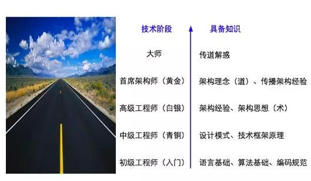

交流会是什么 有话题引导 你说一句我说一句 取长补短 要表述的时候，打断还是不打断另外再说 只是，千万不要像老罗 VS 王自如一样，那是不礼貌的 等我把话说完 怎么进行交流（普通谈话、通知、讨论，都算交流）： 每次交流，都应有回应方 都需要指定回应方，可能是一人、多人 下面开始进行交流，每个人都要发表意见
程序员社交 花十分钟讨论这个问题 github watch issue pr stackoverflow v2ex 、 知乎 、 cnodejs cnblog 、 csdn quora 、 twitter
知识获取 花十分钟讨论这个问题 github stackoverflow v2ex 、 知乎 、 cnodejs cnblog 、 csdn quora 、 twitter 邮件组 、 码农周刊 (new) 一手信息、二手信息 （new)
最后 赠送一张图  我们俩都是年轻人，要将自己献身于伟大事业的开创，我们是天生的魔术师，但我们不会用自己的天赋去伤害任何人。 -- 阿尔弗雷德·波登 《致命魔术》 知道创宇研发技能表v3.0 完成一件事有好几条途径，优秀的人的途径最短 任何科学研究最终必须至少到哲学层面，触碰到上帝的脚 技能提升，思想提升 END